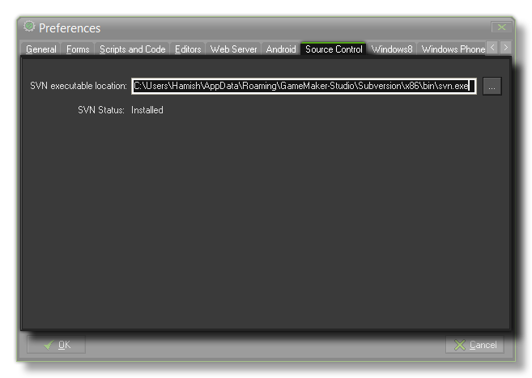

From this tab you can point GameMaker:Studio to the version of SVN that you wish to use for source control. By default this points to the version that is bundled with the program and we recommend that
you always use this version as GameMaker:Studio has been optimised for it. However, you may have installed a different source control base or wish to use a different version of svn, in which case you
would set the path here.
If everything is set up correctly the SVN Status should be "Installed", other wise it will show "Not Installed" in red text. For further information on setting up and using source control, please see the
Advanced Use - Source Control section.